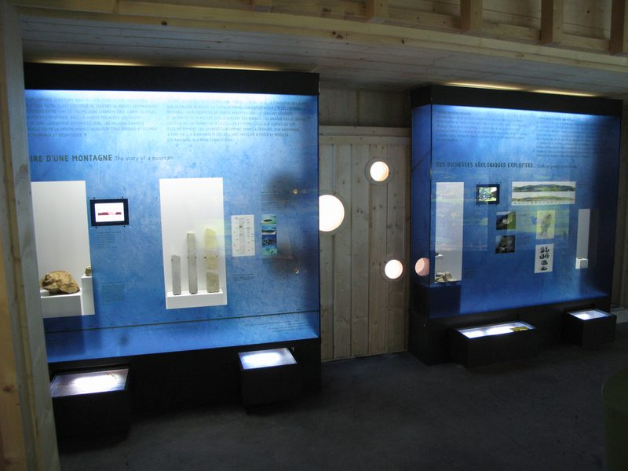
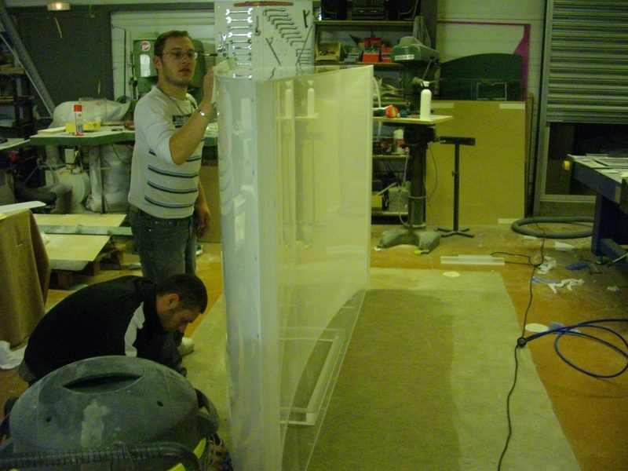
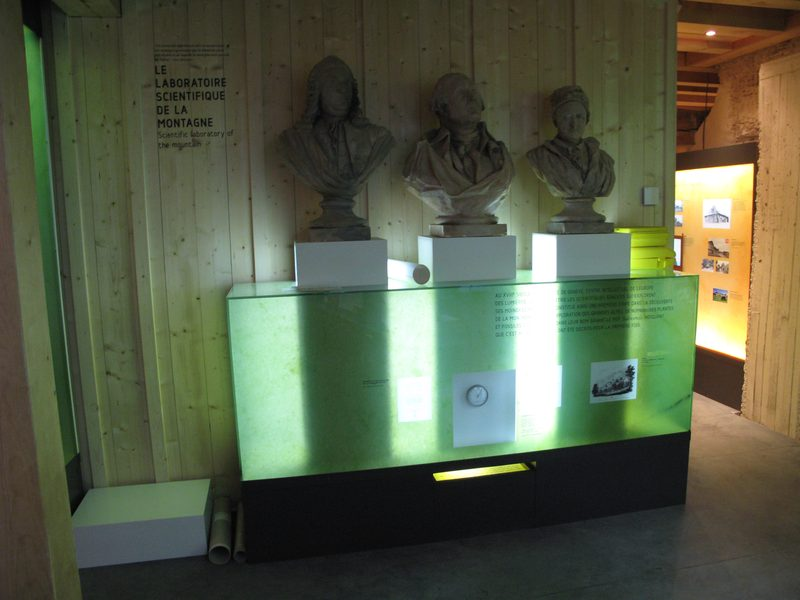
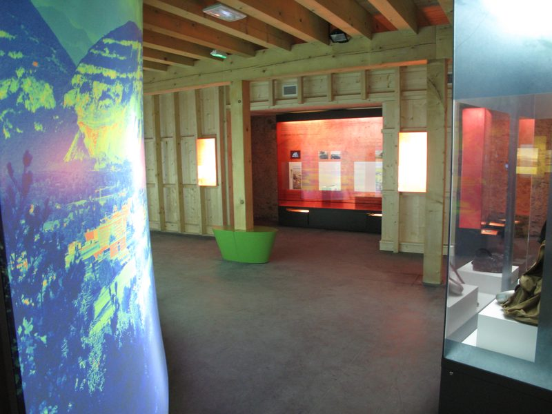
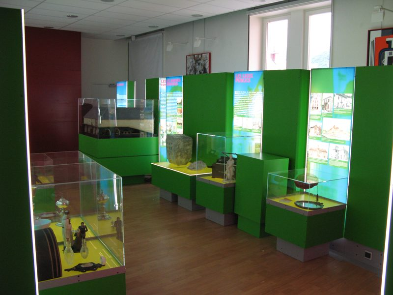
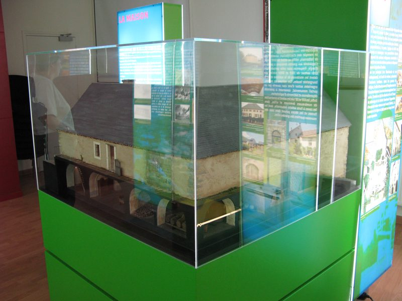
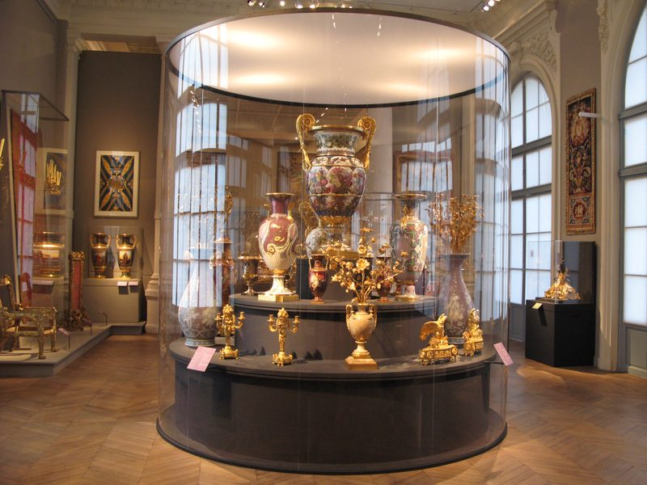
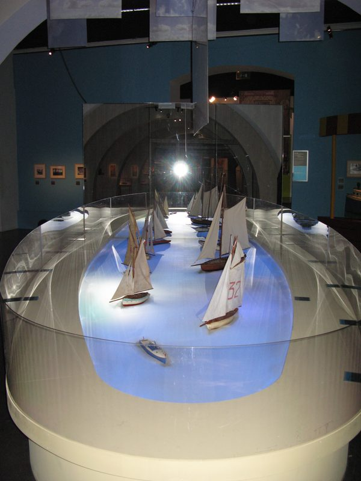
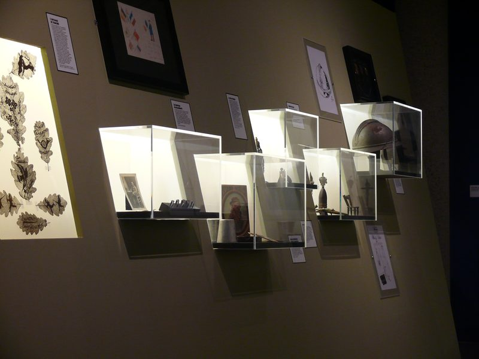

Protéger sans cacher
Musées, lieux d'exposition, collectionneurs : ACPP réalise des protections plastiques adaptées à chaque objet, à ses dimensions et à son mode de présentation.
Chaque protection est conçue et fabriquée à l'unité, à partir des mesures de l'œuvre et des contraintes du lieu qui l'accueille.

Réalisations
Vitrines, socles, capots et présentoirs fabriqués à l'unité pour des lieux d'exposition.

















